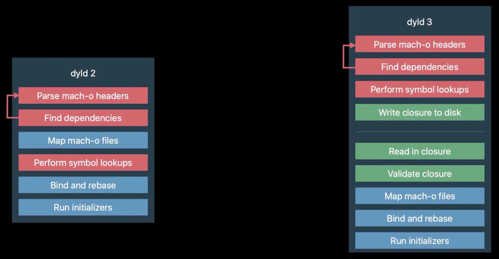

前言
Hi Coder，我是 CoderStar！
dyld 迭代
我们对dyld展开讲一下，其是开源的，我们可以官网下载后阅读其源码。
dyld 1.0（1996-2004）
一般大家很少提到这个版本的dyld，因为这个版本有很多东西都不完善，用起来也会有很多风险。
dyld 1包含在 NEXTStep 3.3 中，在此之前的 NEXTStep 使用静态二进制数据，作用并不是很大。
dyld 1 是在系统广泛使用 C++ 动态库之前编写的，由于 C++ 有许多特性，例如其初始化器的工作，在静态环境工作良好，但是在动态环境中可能会降低性能，因此大型的 C++ 动态库会导致 dyld 需要完成大量的工作，速度变慢。
在发布 macOS 10.0 和 Cheetah 前，还增加了一个特性，即 Prebinding 预绑定。我们可以使用 Prebinding 技术为系统中的所有 dylib 和应用程序找到固定的地址。dyld 将会加载这些地址的所有内容。如果加载成功，将会编辑所有 dylib 和程序的二进制数据，来获得所有预计算。当下次需要将所有数据放入相同地址时就不需要进行额外操作了，将大大的提高速度。但是这也意味着每次启动都需要编辑这些二进制数据，至少从安全性来说，这种方式并不友好。
dyld 2（2004-2017）
dyld 2 从 2004 年发布至今，已经经过了多个版本迭代，我们现在常见的一些特性，例如 ASLR、Code Sign、share cache 等技术，都是在 dyld 2 中引入的。
dyld 2 是 dyld 1 完全重写的版本，可以正确支持 C++ 初始化器语义，同时扩展了 mach-o 格式并更新 dyld，从而获得了高效率 C++ 库的支持。
dyld 2 具有完成的 dlopen 和 dlsym（主要用于动态加载库和调用函数）实现，且具有正确的语义，因此弃用了旧版的 API。
通过多种方式增加安全性
- 增加 codeSigning 代码签名、
- ASLR（Address space layout randomization）地址空间配置随机加载：每次加载库时，可能位于不同的地址
bound checking边界检查：mach-o 文件中增加了 Header 的边界检查功能，从而避免恶意二进制数据的注入
增强了性能
- 可以消除
Prebinding，用share cache共享代码代替。
share cache是一个单文件，包含大多数系统dylib，由于这些dylib合并成了一个文件，所以可以进行优化，继而提高启动速度。
- 重新调整所有文本段（
_TEXT）和数据段（_DATA），并重写整个符号表，以此来减小文件的大小，从而在每个进程中仅挂载少量的区域。允许我们打包二进制数据段，从而节省大量的 RAM； - 本质是一个
dylib预链接器，它在 RAM 上的节约是显著的，在普通的 iOS 程序中运行可以节约500-1g内存； - 还可以预生成数据结构，用来供 dyld 和 ObjC 在运行时使用。从而不必在程序启动时做这些事情，这也会节约更多的 RAM 和时间；
share cache位于/System/Library/Caches/com.apple.dyld/dyld_shared_cache_armX，X 为 ARM 处理器指令集架构，需要注意的是在 iOS 系统上这个文件并不是在设备开机时每次进行合成，一般越狱后进行对此进行删除，可能设备就无法正常使用了。如果是 MacOS 系统，应该是每次设备启动动态生成。一般我们想要拿到系统库的符号表，也是从这个
share cache上入手，这里说一个工具dyld_cache_extract
dyld 3（2017-2021）
dyld 3 是 2017 年 WWDC 推出的全新的动态链接器，它完全改变了动态链接的概念，且将成为大多数 macOS 系统程序的默认设置。2017 Apple OS 平台上的所有系统程序都会默认使用 dyld 3。
dyld 3 最早是在 2017 年的 iOS 11 中引入，主要用来优化系统库，而在 iOS 13 系统中，iOS 全面采用新的 dyld 3 来替代之前的 dyld 2，因为 dyld 3 完全兼容 dyld 2，其 API 接口也是一样的，所以，在大部分情况下，开发者并不需要做额外的适配就能平滑过渡。
以下是 dyld 2 向 dyld 3 的一些改变，主要是将安全敏感的部分 和 占用大量资源的部分移动到上层，然后将一个 closure 写入磁盘进行缓存，然后我们在程序进程中使用 closure。

dyld2 和 dyld3 的加载方式略有不同。dyld2 是纯粹的 in-process，也就是在程序进程内执行的，也就意味着只有当应用程序被启动的时候，dyld2 才能开始执行任务。dyld3 则是部分 out-of-process，部分 in-process。上图中右侧 dyld3 虚线上便是out-of-process。
dyld2 的过程是：加载 dyld 到 App 进程，加载动态库（包括所依赖的所有动态库），Rebase，Bind，初始化 Objective C Runtime 和其它的初始化代码。
dyld3 的 out-of-process 会做如下事情：
- 分析 Mach-o Headers
- 分析依赖的动态库
- 查找需要 Rebase & Bind 之类的符号
- 把上述结果写入缓存
等我们启动应用时，会对闭包进行校验，直接能享受到闭包的缓存。
dyld 3 包含三个组件：
本进程外的 Mach-O 分析器 / 编译器（一个后台程序）；
在 dyld 2 的加载流程中，Parse mach-o headers和Find Dependencies存在安全风险（可以通过修改 mach-o header 及添加非法 @rpath 进行攻击），而 Perform symbol lookups 会耗费较多的 CPU 时间，因为一个库文件不变时，符号将始终位于库中相同的偏移位置，这两部分在 dyld 3 中将采用提前写入把结果数据缓存成文件的方式构成一个lauch closure（可以理解为缓存文件）。本进程内执行
lauch closure的引擎；
验证lauch closures是否正确，映射 dylib，执行 main 函数。此时，它不再需要分析 mach-o header 和执行符号查找，节省了不少时间。lauch closure的缓存：
系统程序的lauch closure直接内置在shared cache中，而对于第三方 APP，将在 APP 安装或更新时生成，这样就能保证lauch closure总是在 APP 打开之前准备好。
总体来说，dyld 3 把很多耗时的操作都提前处理好了，极大提升了启动速度。
dyld 3 的符号缺失问题
dyld 2 默认采取的是 lazy symbol 的符号加载方式，但在 dyld 3 中，在 app 启动之前，符号解析的结果已经在’lauch closure’内了，所以’lazy symbol’就不再需要。这时，如果有符号缺失的情况，APP 的行为会有不同：在 dyld 2 中，首次调用缺失符号时 APP 会 crash；而 dyld 3 中，缺失符号会导致 APP 一启动就会 crash。
dyld4（2021-）
在 iOS 15 系统上已经有 dyld4 的影子了，具体资料还没有。
最后
要更加努力呀！
Let’s be CoderStar!